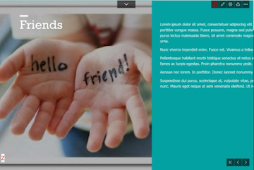
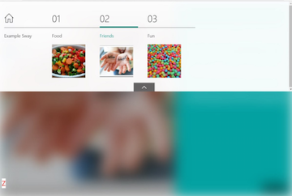

On the Home Music team, I worked as the cross-functional lead for the "Home Friday Takeover" experience. I independently scoped, built 4 new shelves, and programmed the entire experience on the Main and Music feeds. Intended to be a global launch, I prepared translations for all markets and led QA test sessions cross-mission with client engineers to ensure a smooth and functional experience. We ran A/B and holdback tests to learn the impact of showing this relatively invasive feature to all users. Launched with extensive monitoring, the takeover lifted new release consumption by 2.6% in the entire app and led to 39% more users navigating to the Music subfeed.
From idea to completion, I designed and built batch data pipelines, BigTable storage, and backend API to generate and serve personalized upcoming releases per user ("Count down pages") on the Home feed. I worked collaboratively cross-mission with client engineers to ensure feature data was properly passed, with data science to measure the impact of introducing a feature that doesn't lead to new streams, and with product to ensure we surfaced the most ideal balance of upcoming releases to new releases. After rolling out upcoming releases on Home, we increased album pre-save count by 48%.
On a brand new team, I built out the initial prototype for the "Smart Shuffle" feature inside of user's listening sessions. It surfaces recommendations based on the intent of the tracks in your playlist or session. I worked closely with the Data Curation team to improve the recommendation quality and deliver an interactive component for users to like or dislike a rec. After several A/B tests, we launched this feature to 400M+ users globally. As an initial engineer on the team, we received a patent for this novel algorithm: Systems and methods for interleaving recommended media items in a playlist.
I worked on the data-facing backend service for the 2020 Wrapped Campaign (your top songs, artists, genres, etc). Prior to that, I worked on a squad focused around playlist curation for any mood or activity. I road managed a test, implemented playlist strategies, and helped migrate radio and playlist frameworks to new experimentation platforms and upgrade our pipelines.
I turned someone's hack week project into production-ready code, which ended up becoming today's "One Repeat & Repeat Rewind". I worked with Product and Data Science to test playlists that show you music you can't stop listening to. The initial test led to an increase in Spotify overall consumption, which was no simple feat.
Outside of my squad work, I mentored two junior engineers biweekly, led eight quarterly mentorship workshops to ~100 Spotifiers, facilitated ~50 incident reviews across the Personalization mission, and frequently participated in technical book clubs from Domain-Driven design to data intensive systems.
I served as a Project Manager in JumboCode, which is a Tufts student-run club dedicated to making websites and applications for non-profits while empowering students to work on out-of-school projects. I led a project to make a website for the Textbook Exchange Network (TEN), a coalition of student-run textbook exchanges on Boston university campuses where students can browse, buy, and sell used books every semester.
Interning within LinkedIn Marketing Solutions (LMS), I focused on its Campaign Manager which handles companies' ad accounts. I worked on a front-end feature that allows a company to associate their company with an ad account when going through the new campaign creation flow. In the second half of the summer, I worked on the API and front-end component for the Company Creation feature in which a user can create a company page on the fly. The new Company Creation design featured inline efforts to mitigate the attrition of transitioning to a new window.
In the Microsoft Explorer internship, I had the opportunity to "explore" both the Program Manager position and the Software Developer role. I really enjoyed the creative aspect of being a PM and the problem-solving challenge of being a developer.
I worked on a team producing Microsoft Sway (similar to Powerpoint), but the application does all of the designing and templating for you. Two other interns and I worked on improving the discoverability of the navigation feature (to jump through Sway slides more easily). We iterated through designs as PMs that we later implemented as engineers in C# and Typescript. Check out our pull-down navigation bar!


At Tufts, I loved teaching introductory computer science concepts to beginners. I taught computer labs for programming students in Data Structures, graded homework, and provided individual assistance with class homework and projects during open office hours.
I created an inventory system for the CEEO lab using Google Spreadsheet's Script Editor. While building the project, I learned how to program in Javacript and that Google has some neat built-in functionalities. I also worked with the GrovePi to mess around with proof-of-concept "Internet of Things" projects. I coded a function that posted tweets when a button was pressed on the GrovePi. I also was able to livestream all the current tweets in the world and make a light sensor flash when a specific hashtag appeared. For a better visual, watch my youtube video.